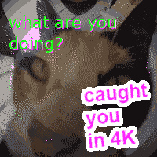
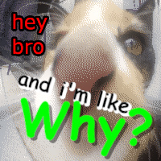
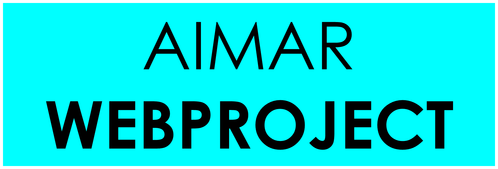

Gambar stiker ini menjelaskan bahwa Silvia telah menangkapmu berbuat jahat dan memotret kamu saat berbuat jahat dalam 4K dengan detail, ini biasanya meme dari orang barat ya, jadi lucu sekali.
Silvia sedang lapar, jadi dia ingin mencari siapapun untuk dimakan! Hati-hati kamu dipilih sama dia dan dimakan lahap sama dia! Kata dia kamu enak sekali, gurih sekali.

Temanmu Silvia, mendatangimu dengan wajah terlalu dekat dengan mukamu, dan kamu kayak KENAPA!!!. Sepertinya dia ingin membohongi dan mengolok-ngolok kamu setiap hari. Dia ngeselin sekali!
